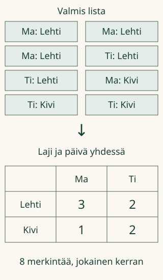

Loikka sai Aavalta listan. Siinä lukee aina kaksi asiaa: minä päivänä ja mikä esine. Miten löydämme nopeasti saman päivän saman lajin merkinnät?
Listasta taulukoksi
Järjestän annetut merkinnät sopivien otsikoiden alle.
Tässä on keksitty, valmis havaintolista. Kaikki sovitut merkinnät ovat mukana. Lehtiä ja kiviä ei tarvitse tunnistaa itse: jokaisessa merkinnässä on nimi.
1. Yksi merkintä, yksi ruutu
Merkintä ”Ma: Lehti” sopii Lehti-riville ja Ma-sarakkeeseen. Se lisää niiden risteykseen yhden. ”Ti: Lehti” menee samalle riville mutta eri sarakkeeseen. Pelkkä lajin nimi ei siis vielä riitä.

2. Sama luku saa toistua
Tiistain Lehti-ruutuun tulee 2 ja tiistain Kivi-ruutuun myös 2. Luku ei ole kertakäyttöinen merkki. Kummallakin ryhmällä on oma määrä.
Ennusta: voisiko kaiken yhdistää yhteen Määrä-sarakkeeseen, jos haluamme säilyttää myös päivien eron?
Katso ajatus
Ei ilman muuta järjestelyä. Pelkistä lajin yhteismääristä ei enää näkisi, mikä päivä oli kyseessä. Tarvitsemme paikan molemmille tiedoille.
Ilman JavaScriptiä piirrä paperille rivit Lehti ja Kivi sekä sarakkeet Ma ja Ti. Kirjoita yllä olevan kuvan listan määrät niiden risteyksiin.
Esimerkin eteneminen näyttää laskennan vaiheet. Jo kirjattu merkintä saa ✓-merkin, mutta pysyy listassa. Oman ruudukon saat täyttää suoraan listasta; kaikkia vaiheita ei tarvitse painella läpi.
Uusi tilanne: leikkipajan lista
”Toinen aineisto” vaihtaa lajeiksi kynät ja kumit sekä ajankohdiksi aamun ja illan. Nyt otsikot vaihtuvat, mutta sama tapa toimii: tarkista molemmat tiedot ennen kuin lisäät merkinnän ruutuun.
Listan täydellisyys on tässä annettu. Jos jonkin sovitun ryhmän merkintöjä ei ole, sen määrä on 0. Oikeassa tutkimuksessa puuttuva havaintokerta ei silti tarkoita nollaa.
Apua
Peitä muut rivit hetkeksi. Etsi listasta vain yksi yhdistelmä, esimerkiksi Ma ja Lehti. Merkitse paperille jokainen löytynyt kohta kerran. Kirjoita saatu määrä oikeiden otsikoiden risteykseen. Sitten vaihda yhdistelmää.
Lisäpohdinta
Voit vaihtaa rivit ja sarakkeet keskenään. Määrien pitää kulkea omien otsikoidensa mukana. Montako merkintää taulukossa on yhteensä? Tarkista, ettei mikään hävinnyt tai tullut kahdesti. Tämä summa on tarkistusapu, ei yksin riittävä todistus oikeista ruuduista.
Opettajalle ja ilman ruutua
Vuosiluokat 3–6. Vaadittu AND-esitieto on M-DATA-09 sekä M-DATA-04. Tiedon järjestelmällinen keruu ja yksinkertainen taulukko palautetaan tarvittaessa. Tässä harjoitellaan annetun valmiin listan järjestämistä kahden ominaisuuden mukaan. Pienten määrien laskeminen oletetaan tai tuetaan. Taulukon lukeminen ja määrä eivät saa korvata havaintokerran kattavuuden tarkistusta.
Jokainen kortti on yksi merkintä. Samanlajiset kortit voivat olla eri havaintoja. Oikeassa eläintutkimuksessa saman eläimen näkeminen uudelleen ei automaattisesti tarkoita eri yksilöä. Keksitystä listasta ei tehdä populaatiopäätelmää eikä sitä väitetä lapselta kerätyksi aineistoksi.
Ruudukon täyttäminen harjoittelee lukujen sijoittamista annetun rakenteen sisään; se on laajempi kuin valmiin taulukon tunnistaminen mutta ei osoita itsenäistä taulukkosuunnittelua kaikissa tilanteissa. Paperilla myös muut selkeät otsikkojärjestelyt voivat olla kelvollisia. Mallin katsominen ja apu ovat opetustukea. Ei pisteitä, henkilökohtaista historiaa tai pysyvän hallinnan päätelmää.
Ilman ruutua tehkää kaksi päivälappua ja kaksi lajilappua. Siirtäkää annetut havaintokortit niiden risteyksiin. Säilyttäkää jokainen kortti vain yhdessä paikassa. Lopuksi laskekaa ruutujen määrät ja vaihtakaa halutessanne rivit ja sarakkeet.
Lopuksi: mitä tietoja tarvitset, jotta tiedät yhden merkinnän oikean ruudun?
 Loikka sai Aavalta listan. Siinä lukee aina kaksi asiaa: minä päivänä ja mikä esine. Miten löydämme nopeasti saman päivän saman lajin merkinnät?
Loikka sai Aavalta listan. Siinä lukee aina kaksi asiaa: minä päivänä ja mikä esine. Miten löydämme nopeasti saman päivän saman lajin merkinnät?